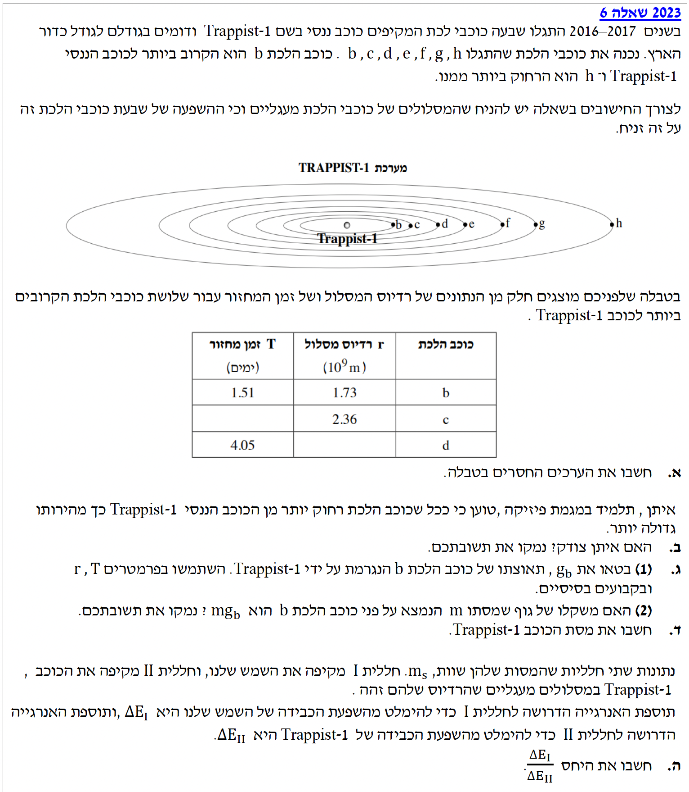
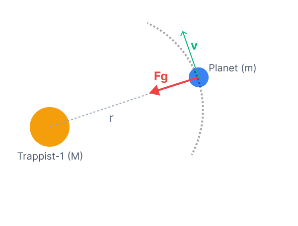

פתרון מודרך ומוסבר צעד-אחר-צעד, כולל ניתוח כוחות ושימוש בחוקי קפלר
השאלה עוסקת במערכת השמש Trappist-1, בעלת שבעה כוכבי לכת המקיפים אותה במסלולים מעגליים. הנתונים מתייחסים לשלושת כוכבי הלכת הקרובים ביותר (b, c, d). אנו נשתמש בחוקי ניוטון ובחוקי קפלר כדי לנתח את תנועתם.

עלינו למצוא את זמן המחזור של כוכב הלכת c \( (T_c) \) ואת רדיוס המסלול של כוכב הלכת d \( (r_d) \).
נשתמש בחוק השלישי של קפלר, הקובע כי יחס ריבועי זמני המחזור שווה ליחס מעוקבי רדיוס המסלול עבור גופים המקיפים את אותו מרכז כובד:
\( \left( \frac{T_1}{T_2} \right)^2 = \left( \frac{r_1}{r_2} \right)^3 \)נרשום את חוק קפלר השלישי עבור שני כוכבי הלכת:
נוציא שורש ריבועי משני האגפים כדי לבודד את הנעלם \( T_c \) מתוך החזקה:
השורש והחזקה הריבועית מבטלים זה את זה באגף השמאלי:
נכפול את שני האגפים במכנה \( T_b \):
שימו לב: אנו הולכים להציב את זמן המחזור בימים (days) ללא המרה לשניות! מדוע זה מותר? קראו את "טיפ המורה" בסוף הסעיף.
כעת כשהנעלם מבודד, נציב את הערכים המספריים מהטבלה:
החזקה \( 10^9 \) מופיעה במונה ובמכנה, לכן ניתן לצמצם אותה:
נחשב קודם את פעולת החילוק בתוך הסוגריים:
נעלה את התוצאה בחזקה שלישית:
נחשב את השורש הריבועי:
נכפול ונקבל את התוצאה הסופית:
נרשום שוב את חוק קפלר השלישי, הפעם עבור כוכבי הלכת d ו- b:
נוציא שורש שלישי (שורש קובי) משני האגפים כדי לבודד את המנה המכילה את הרדיוס:
השורש השלישי והחזקה השלישית מבטלים זה את זה באגף השמאלי:
נכפול את שני האגפים ב- \( r_b \):
נציב את הנתונים מהטבלה:
נחשב את פעולת החילוק בתוך הסוגריים:
נעלה את התוצאה בריבוע:
נחשב את השורש השלישי באמצעות המחשבון:
נכפול ונקבל את התוצאה הסופית:
הערכים החסרים בטבלה הם:
\( T_c = 2.40 \) ימים
\( r_d = 3.34 \cdot 10^9 \) מטרים
הצבתם בנוסחה את הזמן בימים וקיבלתם זמן בימים. בדרך כלל אנחנו תמיד אומרים שאסור לעשות זאת וחובה להמיר ל-MKS (מטר-קילוגרם-שנייה). אז למה פה זה מותר?
זהו טריק שמותר לבצע אך ורק בגלל שמדובר ביחסים. הנוסחה תעבוד בכל יחידת מידה, פשוט כי יחידות המידה של היחס (מונה חלקי מכנה) מתבטלות לחלוטין!
אבל ויש פה אבל גדול: הכלל שאני תמיד אומר לתלמידים שלי הוא - אם אתם לא בטוחים לגמרי שזה מותר במקרה הספציפי, תמירו ליחידות תקניות. זה תמיד, אבל תמיד, יעבוד!
תלמיד טוען: "ככל שכוכב הלכת רחוק יותר מהכוכב (כלומר הרדיוס \( r \) גדול יותר), כך מהירותו גדולה יותר".
עלינו לקבוע האם איתן צודק, ולנמק באמצעות ביטוי פיזיקלי הקושר בין מהירות כוכב הלכת לרדיוס המסלול שלו.
נשתמש בחוק השני של ניוטון עבור תנועה מעגלית, ובחוק הכבידה העולמי:
\( \Sigma\vec{F} = m\vec{a} \) \( F = G\frac{m_1 m_2}{r^2} \) \( a_R = \frac{v^2}{r} \)
הכוח היחיד הפועל על כוכב הלכת הוא כוח הכבידה המכוון למרכז המסלול.
נרשום את משוואת החוק השני של ניוטון בציר הרדיאלי המכוון למרכז הכוכב Trappist-1:
הכוח היחיד הפועל הוא כוח הכבידה \( F_G \). נציב את הביטוי שלו ואת התאוצה הרדיאלית כתלות במהירות הקווית:
נחלק את שני האגפים במסת כוכב הלכת \( m \):
נכפול את שני האגפים ברדיוס המסלול \( r \) כדי לבודד את המהירות הקווית:
נצמצם את ה- \( r \) במונה עם אחד ה- \( r \)-ים שבמכנה באגף השמאלי:
נחליף בין האגפים לנוחות הקריאה, ונוציא שורש ריבועי משני האגפים כדי למצוא את \( v \):
מתוך הביטוי שקיבלנו, ניתן לראות כי המהירות הקווית של כוכב הלכת עומדת ביחס הפוך לשורש רדיוס המסלול \( \left( v \propto \frac{1}{\sqrt{r}} \right) \). כלומר, ככל שרדיוס המסלול \( r \) גדול יותר, המכנה של השבר גדול יותר. כאשר אנו מחלקים במספר גדול יותר, התוצאה קטנה יותר. לכן, גודל המהירות \( v \) יהיה קטן יותר.
מסקנה: איתן אינו צודק. ככל שכוכב הלכת רחוק יותר מן הכוכב, גודל מהירותו קטן יותר (ולא גדול יותר).
כוכב הלכת b נמשך על ידי כוכב Trappist-1, תאוצתו מוגדרת כ- \( g_b \).
לבטא את תאוצתו של כוכב הלכת b, שנסמנה \( g_b \), באמצעות הפרמטרים \( r_b, T_b \) וקבועים בסיסיים.
תאוצתו של כוכב לכת הנע במעגל היא התאוצה הרדיאלית שלו למרכז הכוכב. נשתמש בנוסחאות הקינמטיקה של תנועה מעגלית:
\( a_R = \omega^2 r \) \( \omega = \frac{2\pi}{T} \)נרשום את תאוצתו הרדיאלית של כוכב הלכת:
נציב את הקשר המייצג את המהירות הזוויתית כתלות בזמן המחזור \( \omega = \frac{2\pi}{T_b} \):
נפעיל את חוקי החזקות - נעלה בריבוע כל איבר במונה בנפרד (גם את 2 וגם את פאי), ואת המכנה בנפרד:
נחשב את \( 2^2 \):
נסדר את הביטוי על ידי הכנסת הרדיוס למונה, ונגדיר תאוצה זו כ- \( g_b \) כנדרש בשאלה:
הביטוי לתאוצה הוא: \( g_b = \frac{4\pi^2 r_b}{T_b^2} \)
גוף בעל מסה \( m \) הנמצא על פני כוכב הלכת b.
האם משקלו שווה ל- \( m \cdot g_b \)? עלינו לנמק.
התשובה היא לא.
התאוצה \( g_b \) שחישבנו קודם היא תאוצת כוכב הלכת כולו (יחד עם כל הגופים שעליו) כתוצאה מכוח המשיכה של כוכב האם Trappist-1, לכיוון מרכזו של Trappist-1. לעומת זאת, "משקל על פני כוכב לכת" נגזר מתאוצת הנפילה החופשית (תאוצת הכובד המקומית) אל עבר מרכזו של כוכב הלכת עצמו. תאוצת כובד מקומית זו תלויה במסה של כוכב הלכת b \( (M_b) \) וברדיוס של כוכב הלכת b עצמו \( (R_b) \), לפי הנוסחה \( g_{local} = G\frac{M_b}{R_b^2} \). אין קשר ישיר בין תאוצה מקומית זו לבין התאוצה הצנטריפטלית של כוכב הלכת המקיף את השמש שלו.
מסקנה: המשקל אינו \( m \cdot g_b \), מכיוון ש-\( g_b \) היא תאוצת כוכב הלכת לכיוון השמש שלו (Trappist-1), ולא תאוצת הכובד המקומית על פני כוכב הלכת.
כדי למצוא את המסה של Trappist-1, נשתמש בנתוני כוכב הלכת b מהטבלה. זה הזמן לבצע המרת יחידות למערכת ה-MKS!
את המסה של הכוכב המרכזי במערכת - Trappist-1, נסמן אותה ב- \( M \).
נשלב את החוק השני של ניוטון, חוק הכבידה העולמי ונוסחאות הקינמטיקה לתנועה מעגלית (מהן נפתח את ביטוי התאוצה):
\( \Sigma F = m a_R \) \( F = G\frac{m_1 m_2}{r^2} \) \( a_R = \omega^2 r \) \( \omega = \frac{2\pi}{T} \)נשווה את כוח הכבידה הפועל על כוכב הלכת לכוח הצנטריפטלי על פי החוק השני של ניוטון (\( \Sigma F_R = m a_R \)):
כפי שהראינו בסעיף ג', עלינו לפתח את ביטוי התאוצה. נציב את ביטוי המהירות הזוויתית \( \omega = \frac{2\pi}{T} \) לתוך נוסחת התאוצה \( a_R = \omega^2 r \):
כעת, נציב את ביטוי התאוצה המפותח לתוך משוואת הכוחות שלנו:
נחלק את שני האגפים במסת כוכב הלכת \( m \) (שמופיעה בשני הצדדים):
נכפול את שני האגפים ב- \( r^2 \) כדי להיפטר מהמכנה באגף השמאלי ולהתחיל לבודד את מסת הכוכב \( M \):
נכנס את איברי הרדיוס באגף ימין על ידי חיבור מעריכים (\( r^1 \cdot r^2 = r^3 \)):
נחלק את שני האגפים בקבוע הגרביטציה \( G \):
שימו לב: בניגוד לסעיף א' בו השתמשנו ביחס ויכולנו להשאיר את הזמן בימים, כאן אנו מחשבים גודל מוחלט בעזרת קבוע הגרביטציה \( G \). חובה להמיר את הזמן ליחידות תקניות של שניות (MKS). הצבת הזמן בימים תיתן תוצאה שגויה לחלוטין!
כעת כשהנעלם מבודד, נציב את כל הנתונים, כאשר הזמן הומר לשניות, הרדיוס במטרים, והקבוע G נלקח מדף הנוסחאות:
נחשב את החזקות בנפרד (נעלה את 1.73 בחזקת 3 ואת 10^9 בחזקת 3, וכן נעלה בריבוע את הזמן בשניות שבמכנה):
נכפול את המספרים שאינם חזקות של 10 זה בזה, במונה ובמכנה בנפרד:
נחלק תחילה את המספרים הרגילים זה בזה:
נפעיל את חוקי החזקות לחילוק - חיסור המעריכים (\( 10^{27} / 10^{-1} = 10^{27 - (-1)} = 10^{28} \)):
נעביר לכתיב מדעי תקני (הזזת הנקודה העשרונית שמאלה מגדילה את המעריך ב-1):
המסה של הכוכב Trappist-1 היא כ- \( 1.80 \cdot 10^{29} \text{ kg} \).
בסעיף א' עסקנו ביחסים (חילקנו זמן בזמן), ולכן יחידות המידה הצטמצמו ולא שינו את התוצאה. פה בסעיף ד', אנחנו מחשבים גודל מוחלט ולא יכולים להמשיך עם ימים!
ברגע שאנו מכניסים לנוסחה קבוע כמו קבוע הגרביטציה \( G \), היחידות שלו מכתיבות את הכללים: \( \frac{\text{N}\cdot\text{m}^2}{\text{kg}^2} \). יחידת הכוח ניוטון (\( \text{N} \)) מוגדרת באמצעות קילוגרמים, מטרים ושניות. לכן, אם היינו מציבים פה ימים לדוגמה, התוצאה הייתה פשוט אחרת ושגויה לגמרי. יחידות המידה פה משנות הכל.
המלצה למניעת טעויות חישוב: טעות נפוצה היא לשכוח להעלות בחזקה גם את הקידומת המדעית (למשל \( 10^9 \)). הקישו תמיד במחשבון את הבסיס ואת חזקת ה-10 יחד כשהם בתוך סוגריים!
את היחס \( \frac{\Delta E_I}{\Delta E_{II}} \).
אנרגיית הימלטות משמעותה הבאת החללית לאינסוף עם מהירות אפס (כלומר, סך האנרגיה המכנית הכוללת בסוף שווה לאפס). תוספת האנרגיה היא העבודה הנדרשת לעשות זאת, והיא שווה להפרש האנרגיות. מתוך דף הנוסחאות, ניעזר בנוסחת האנרגיה המכנית הכוללת של לוויין במסלול מעגלי (סכום האנרגיה הקינטית והפוטנציאלית: \( E_T = E_k + U_G \)), ובמשפט עבודה-אנרגיה:
\( E = -\frac{GMm}{2r} \) \( W = \Delta E = E_f - E_i \)נתחיל מהגדרת העבודה (תוספת האנרגיה) הנדרשת כדי להימלט. עבודה זו שווה לאנרגיה הסופית פחות האנרגיה ההתחלתית:
במצב של הימלטות מושלמת, האנרגיה הסופית באינסוף היא אפס. האנרגיה ההתחלתית היא האנרגיה המכנית הכוללת של לוויין במסלול מעגלי. נציב זאת למשוואה:
חיסור של מספר שלילי שווה לחיבור (מינוס כפול מינוס שווה פלוס). זהו הביטוי הכללי לתוספת האנרגיה:
כעת, נרשום ביטוי זה באופן ספציפי עבור חללית I המקיפה את השמש שלנו:
ונרשום ביטוי זהה עבור חללית II המקיפה את הכוכב Trappist-1 (נזכור שרדיוס המסלול \( r \) ומסת החלליות \( m_s \) זהים עבור שתיהן):
נבנה את יחס האנרגיות המבוקש על ידי הצבת שני הביטויים זה מעל זה:
על פי חוקי חילוק שברים (כפל בהופכי), נכפול את השבר שבמונה בהופכי של השבר שבמכנה:
כל הגורמים המשותפים במונה ובמכנה (\( 2r \) , \( G \) , ו- \( m_s \)) מצטמצמים כליל, ואנו נותרים עם היחס בין המסות בלבד:
כעת, נציב את הנתונים המספריים. המסה של Trappist-1 היא התוצאה המתוקנת מהסעיף הקודם:
נפריד את השבר לשני חלקים: חלק למספרים העשרוניים, וחלק לחזקות של 10:
נחשב את פעולת החילוק של המספרים העשרוניים ואת חוקי החזקות (\( 10^{30}/10^{29} = 10^1 \)):
נכפול ב-10 ונקבל את היחס הסופי:
היחס בין תוספות האנרגיה הדרושות הוא: \( \frac{\Delta E_I}{\Delta E_{II}} \approx 11.05 \)
קודם כל, שימו לב ששאלות יחס בפיזיקה הן מתנה! תמיד בנו את הביטויים באותיות לפני שאתם מציבים מספרים. ראיתם איך הכל הצטמצם? אם היינו מנסים לחשב את \( \Delta E \) כמספר, היינו צריכים להמציא ערכים לרדיוס ולחללית, והיינו עלולים לטעות בחישובים המורכבים בדרך.
דגש קריטי להבנה: הנוסחה \( E = -\frac{GMm}{2r} \) היא נוסחת האנרגיה המכנית הכוללת של לוויין במסלול מעגלי. המילה "כוללת" משמעותה סכום! היא כבר מכילה בתוכה גם את האנרגיה הקינטית (\( E_k = \frac{GMm}{2r} \)) וגם את האנרגיה הפוטנציאלית הכובדית (\( U_G = -\frac{GMm}{r} \)). אין צורך לחשב אותן בנפרד ולחבר מחדש (זה אמנם מותר וייתן את אותה התוצאה, אבל למה לנו?). הנוסחה הזו בדף הנוסחאות עושה עבורנו את העבודה וחוסכת זמן.